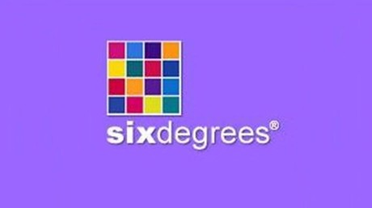
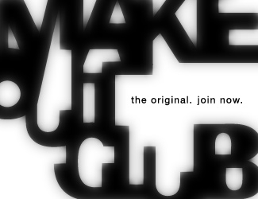
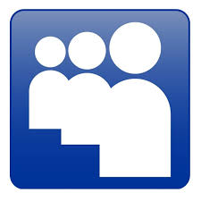

Serwisy społecznościowe zapewne każdy z nas zna. Dzięki nim komunikujemy się ze znajomymi, zasięgamy informacji, dzielimy się swoim życiem z innymi. Wiele młodych osób w dzisiejszych czasach nie wyobraża sobie życia bez chociażby Facebooka czy Snapchata.
A zatem jak zrodziły się serwisy społecznościowe? Postaram się przedstawić to w jak najdogodniejszej postaci.
Koncepcją wykorzystania wielu komputerów osobistych połączonych elektronicznie w celu tworzenia społeczności internetowych zajmowano się od dawna[4]. Podejmowano wiele prób, aby wspomóc rozwój takich społeczności poprzez komunikację komputerową, wykorzystując do tego m.in. Usenet, Advanced Research Projects Agency Network, LISTSERV, Bulletin Board System oraz EIES – elektroniczny serwis do wymiany informacji Turrofa. Członkowie grupy Information Routing Group stworzyli schemat zastosowania wczesnej wersji Internetu do tworzenia sieci społecznościowych[5].
Wczesne serwisy społecznościowe miały łączyć wszystkich użytkowników Internetu. Wiele z nich skupiało się na łączeniu ludzi, którzy wchodzili ze sobą w interakcje za pomocą czatu oraz zachęcały użytkowników do dzielenia się swoimi informacjami i pomysłami za pośrednictwem osobistych stron internetowych[6].
Pod koniec lat 90. profile użytkowników stały się najważniejszą cechą portali społecznościowych, umożliwiając użytkownikom tworzenie list znajomych oraz poszukiwanie osób o podobnych zainteresowaniach. Serwisy nowszej generacji, takie jak SixDegrees.com[7] oraz Makeoutclub[8], udostępniały użytkownikom zaawansowane funkcje służące do szukania i zarządzania znajomymi[9].


Logo SixDegrees.com (lewo) i Makeoutclub (prawo)
W marcu 2005 roku, kiedy Yahoo! stworzył Yahoo! 360°, portale ze społecznością sieciową zaczęły rozwijać się, stając się elementem strategii biznesowej. W lipcu 2005 roku News Corporation wykupiło MySpace.com, a w grudniu brytyjski koncern ITV kupił Friends Reunited. Zaczęły powstawać nowe portale tego typu w różnych językach, dostosowane do potrzeb użytkowników w innych krajach[6].
Najpopularniejsze serwisy społecznościowe
Facebook
Najpopularniejszy dziś portal społecznościowy, z którego korzysta nawet miliard osób jednocześnie, nie jest autorskim pomysłem Marka Zuckerberga. Nie jest on nawet inspirowany podobnymi tworami. The Facebook jest wierną kopią pomysłu braci Winklevoss, którzy zatrudnili Zuckerberga do ukończenia kodu źródłowego strony harvardconnection.com. Miała ona służyć do komunikacji pomiędzy studentami oraz absolwentami Uniwersytetu Harvard, na którym studiowała cała trójka. Jednak prace nad powierzonym Zuckerbergowi zadaniem przeciągały się, czego powodem był drugi projekt, którym zajął się w tym czasie niepokorny student - thefacebook.com. Była to niemal identyczna kopia pomysłu braci Winklevoss i wykorzystywała nawet niektóre elementy graficzne jakie znaleźć można było w pierwszych wersjach harvardconnection.com. Zuckerberg celowo sabotował prace nad pomysłem swoich pracodawców tylko po to, żeby opóźnić start ich projektu, co udało mu się znakomicie.

Twitter
Twitter to obecnie najpopularniejszy mikroblog na świecie. Serwis pojawił się na rynku 11 lat temu i niemalże od razu zrewolucjonizował sposób komunikacji w Internecie. Sprawił, że zwykli ludzie stali się reporterami, publikując ważne informacje na długo przed światowymi stacjami informacyjnymi. Stworzył też nowy kanał marketingu, pozwalający dotrzeć do bardzo specyficznych grup. W ciągu kilku lat niewielki projekt zmienił się w internetowego giganta, który obecnie wyceniany jest na ponad 112 miliardów dolarów. Firma zatrudnia niemalże cztery tysiące osób, które pracują w 35 biurach na całym świecie. W trzecim kwartale 2016 roku przychody Twittera wzrosły do 616 mln dolarów, zaś średnia liczba aktywnych użytkowników wyniosła aż 313 milionów na miesiąc.

LinkedIn
Żartobliwie rzecz ujmując można powiedzieć, że LinkedIn to obowiązkowy portal dla każdego studenta kończącego swoją przygodę z nauką na uczelni wyższej i chcący wstąpić pewnym krokiem w dorosłość. W końcu nie od dziś wiadomo, że wielkie korporacje przed zatrudnieniem pracownika posiłkują się danymi z tej strony. Oznacza to, że stworzony tam profil może okazać się pomocny w znalezieniu pracy.Sama idea portalu skupia się na tworzeniu sieci kontaktów zawodowych oraz specjalistycznych. Strona działa od 2003 roku i posiada blisko 230 milionów unikatowych userów. Miesięczne odwiedziny kształtują się na poziomie 110 milionów wejść.

MySpace
Myspace to portal powstały jeszcze w 2003 roku, czyli w czasach, kiedy nikt jeszcze nie myślał o Facebooku. Pierwotnie witryna miała być portalem randkowym i nieźle jej to wychodziło, jednak z czasem jej potencjał odkryli przedstawiciele branży filmowej oraz muzycznej i portal z randkowego stał się formą promocji małych zespołów.Sama strona przechodziła kilka modernizacji, które z czasem stały się dość …nieprzyjemne. Pamiętam dokładnie, kiedy mój profil potrafił się wczytywać nieograniczoną wręcz ilość czasu, bowiem przeładowany był różnymi wtyczkami oraz dość sporymi skórkami graficznymi. Po wejściu na rynek Facebooka, gros z userów Myspace przeniosła się na nowy portal, zostawiając po sobie sporą lukę.Na dzień dzisiejszy portal odwiedzany jest przez ponad 70 milionów userów.
